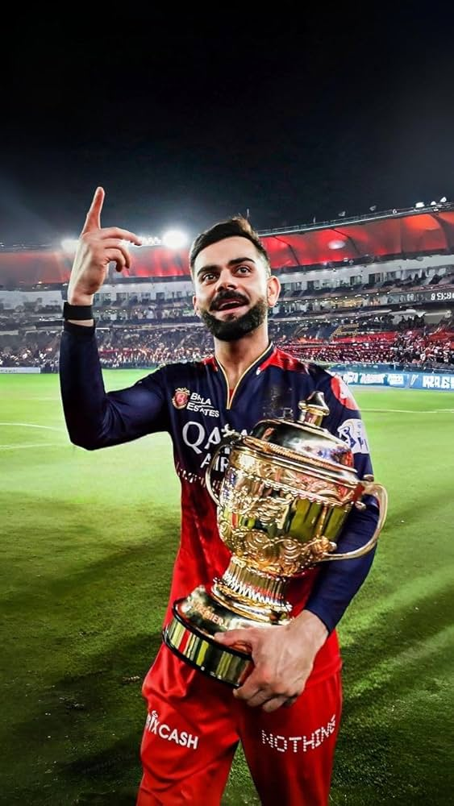
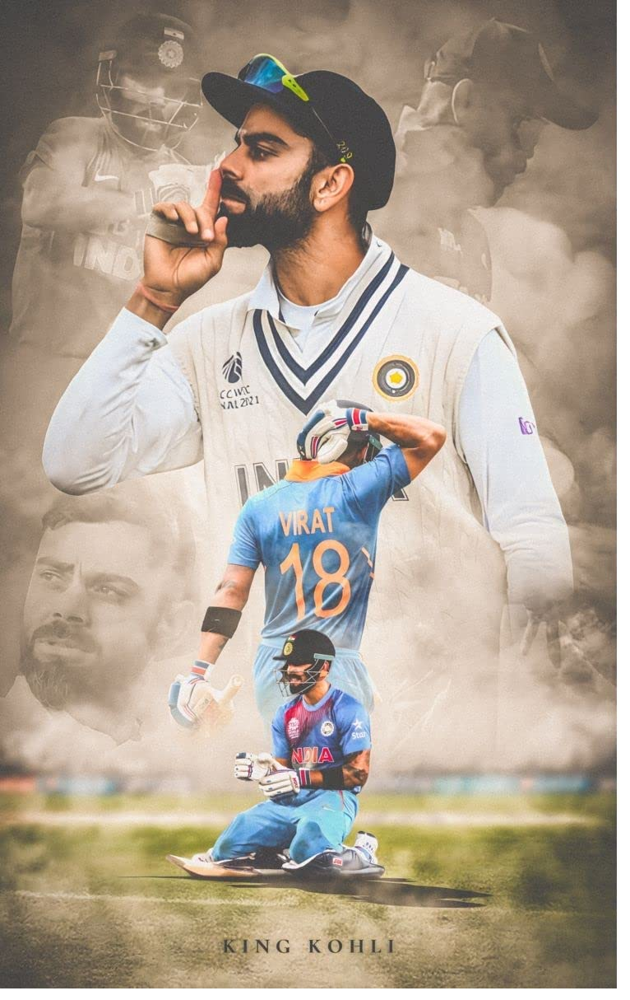
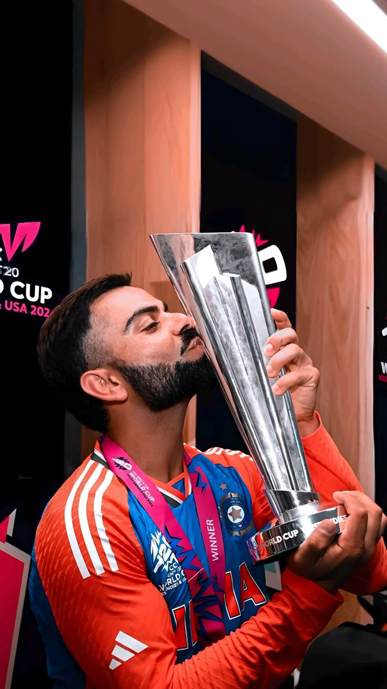

Virat Kohli (born 5 November 1988) is an iconic Indian cricketer and former captain, widely regarded as one of the best batsmen in modern history. Known as a "run-machine" and "King Kohli," he is famous for his technical proficiency, aggressive playing style, and mastery in run chases across all formats. Wikipedia Wikipedia +4 Born in Delhi, Kohli rose to fame by leading India to victory in the 2008 Under-19 World Cup. Since his senior debut in 2008, he has broken numerous records, including scoring the most individual hundreds in One Day International (ODI) cricket. As captain, he brought a fitness-focused culture to the team, transforming the side into a dominant force, particularly in Test cricket, where he led India for several years. Wikipedia Wikipedia +4 He has won multiple prestigious accolades, including the ICC Cricketer of the Year (2017, 2018) and the Arjuna Award. Known for his incredible consistency, he was part of the 2011 World Cup-winning team and retired from Twenty20 International cricket after winning the 2024 T20I World Cup. Beyond his athletic prowess, Kohli is admired for his intense competitiveness and dedication to fitness.